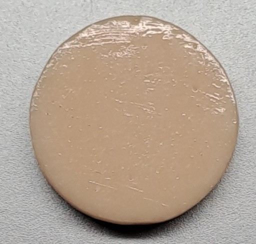
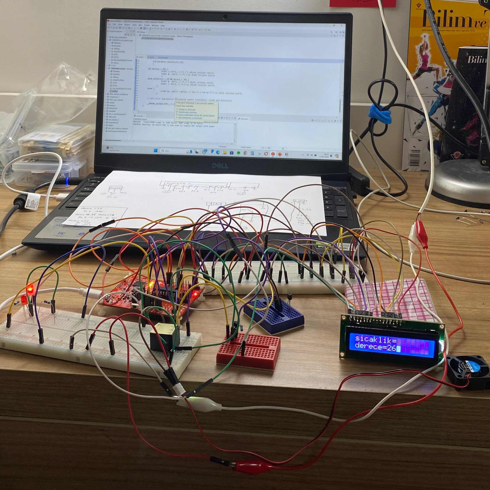

About me
Hi there:)
I am a 3rd-year student in Electronics & Com. Engineering department.
During my uni years I have taken classes mostly based on PCB design, microcontrollers programming, and circuit analysis in my department. I have further trying to developing my skills in problem-solving(sereiously), included to a team work.
I am currently into learning AI. Learning image processing, embedded implementations and more about robotics.
Education
Kocaeli University
Bachelor's Degree - Electronics & Communications Engineering
Date: 2021 - 2025
My recent projects
Color Analysis for Dental Ceramic
Review: This project is a software project that provides an colom comprasion betwween human eye and mobile phone cameras.
Project GitHub Repository
worked on this little guy ↓↓↓

Room Temperature Control System
Review: This project is an embedded system project that can measure the room temperature via analog sensor and gives the necessary feedback to 16x2 LCD. Based on the feedback of the temperature, a simple 5v fan will be included or if the room is so hot alert system will set up.
Project GitHub Repository

more projects will come as soon as possible :)
i keep learning
Courses&Bootcamps
Akbank-Machine Learning Bootcamp
DeneyapKart Akademi T3 Vakfı
A. Elginkan Egitim Merkezi - C++